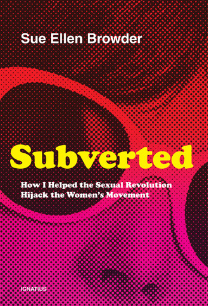
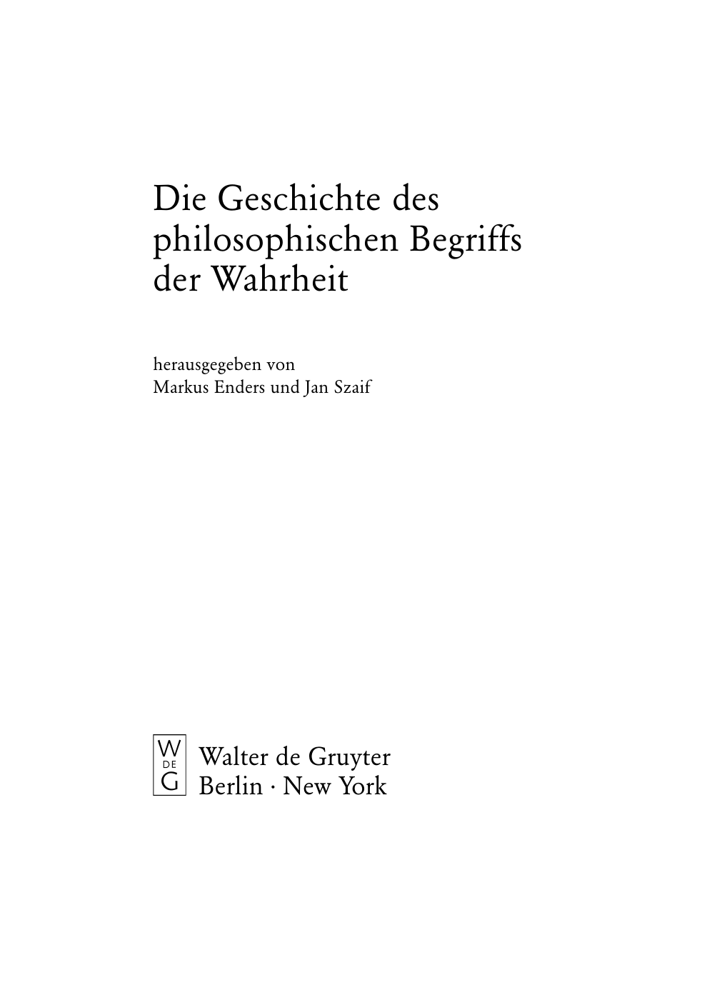
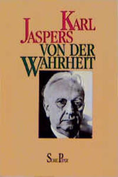
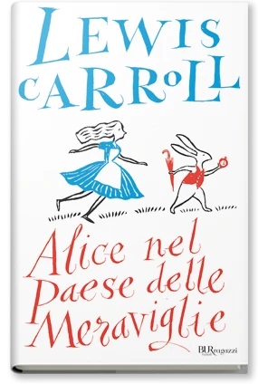
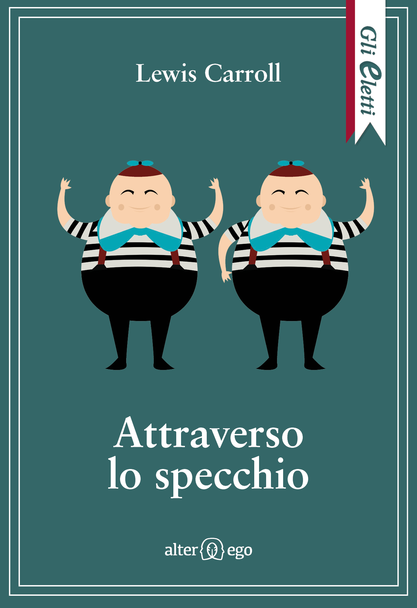
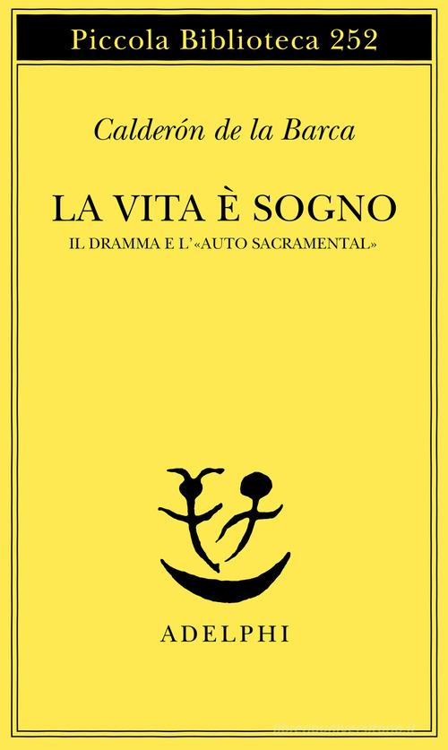
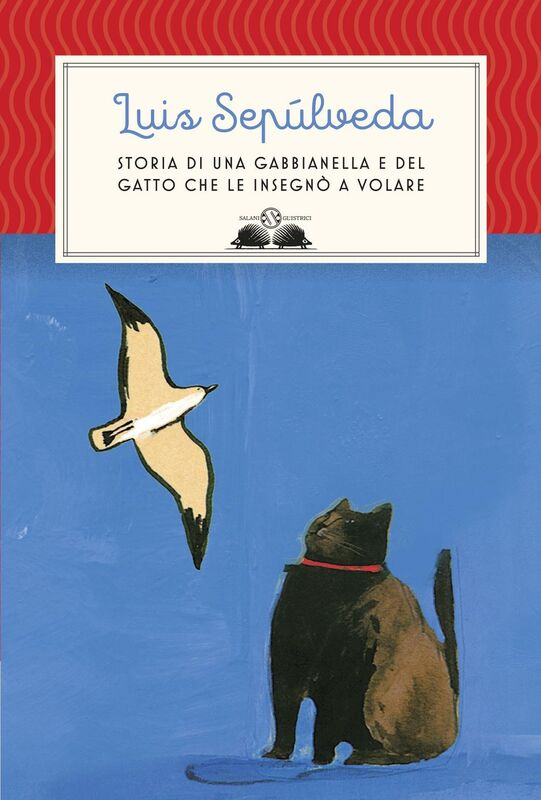
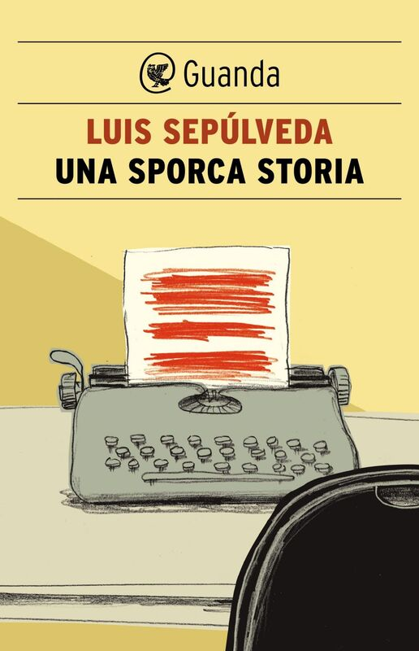

1:12:03 · 19 OPERE
Sharyl Attkisson, una testimone di quest'epoca.
Il filo del discorso
Dr Divago presenta Slanted di Sharyl Attkisson come una testimonianza dall’interno del giornalismo americano. Il libro del 2020 è inserito in uno scaffale di esperienze dirette, insieme a University, Inc. e Subverted: persone che hanno lavorato in istituzioni complesse e ne raccontano condizionamenti e contraddizioni. Il contributo dedica però gran parte del tempo a digressioni su cultura, verità e conflitto politico; la discussione specifica del volume ritorna soprattutto negli ultimi minuti.
Leggi la sintesi completaRiduci la sintesi
Non è quindi una lettura completa del libro né una verifica autonoma di tutte le vicende che vi vengono attribuite. Il primo problema riguarda il rapporto fra competenza e autorità. Il relatore contesta l’etichetta YouTuber quando serve a evitare il confronto con gli argomenti e difende una lettura capace di collegare campi differenti. La raccolta tedesca Die Geschichte des philosophischen Begriffs der Wahrheit, curata da Markus Enders e Jan Szaif, diventa l’occasione per discutere il valore della verità. Dr Divago rimprovera la formula che la chiama un concetto centrale e rivendica invece una sua priorità assoluta. È una tesi filosofica del relatore. La prefazione originale, verificata, dichiara un progetto storico delimitato e non esaustivo; senza collazionare l’indice finale non si certifica l’assenza totale di Jaspers, né un programma intenzionale per cancellarlo. Il trattato citato è probabilmente Von der Wahrheit, opera distinta con riedizioni successive agli anni Settanta. Schweitzer, Caino e Abele, Carroll, Calderón e il Grande inquisitore costruiscono una rete di confronti fra verità, immaginazione, rivalità e tradizione religiosa. I riferimenti letterari non diventano diagnosi di persone reali. La differenza fra due giudizi politici non definisce la schizofrenia; un’opera umanitaria non rende impossibile qualsiasi critica storica al suo autore. Nel passo di Attraverso lo specchio la Regina Bianca parla di sei cose impossibili prima di colazione. Il racconto del viaggio di Paolo richiede un’altra precisazione: gli Atti collocano l’incontro con i fratelli a Pozzuoli, dopo Siracusa e Reggio, e il termine non dimostra da solo l’etnia di tutti i membri della comunità. Una lunga sezione critica un articolo di Luis Sepúlveda intitolato Shalom, probabilmente contenuto in Una sporca storia, raccolta Guanda del 2004. Copyright, indice e premessa dell’anteprima autorizzata rendono coerente l’identificazione, mentre il testo completo del capitolo non è qui collazionato. Non è lo stesso riferimento di Shalom, poeta nelle Rose di Atacama. Dr Divago riconosce allo scrittore valore narrativo e testimoniale sul Cile, ma ne contesta la lettura del conflitto israelo-palestinese. Le accuse contro Sepúlveda, Varoufakis, Albanese e altri rimangono giudizi attribuiti: non accertano crimini, stati mentali o convinzioni uniformi di intere comunità. Anche i richiami a Gaza e Be’eri non trasformano percentuali non verificate o singole immagini di benessere in misure rappresentative. La discussione degli ospedali richiede distinguere accusa, prova e qualificazione giuridica. Il diritto umanitario prevede protezioni specifiche e condizioni per la loro eventuale cessazione; non autorizza automaticamente qualunque attacco dopo una generica asserzione di uso militare. Restano i criteri di distinzione, proporzionalità e precauzione, insieme agli avvertimenti richiesti. La critica dell’antisemitismo e il richiamo alle radici ebraiche del cristianesimo non comportano una identificazione di tutti i palestinesi con Hamas o di ogni critica politica con una stessa posizione morale. Tornando a Slanted, il relatore mette in primo piano la selezione dei fatti, l’uso di fonti anonime e la sostituzione della cronaca con un orientamento narrativo. L’esempio delle batterie Boeing riguarda il 787, distinto dal 737 MAX: il caso tecnico è documentato, mentre l’ipotesi che un servizio giornalistico avrebbe evitato incidenti successivi rimane un controfattuale. Analogamente, l’annuncio Meta sul fact-checking del gennaio 2025 e la crisi elettorale romena sono sviluppi successivi al libro e vanno ricostruiti con autorità, tempi e competenze distinti. Follow the Science viene soltanto nominato come altro titolo dell’autrice. La chiusura invita a leggere e confrontare pagine e fatti: una testimonianza può offrire informazioni importanti, ma il suo valore non esonera dalla verifica di ciascuna affermazione.
I libri nel discorso

University, Inc.: The Corporate Corruption of Higher Education
Note sul riferimento
Copertina: Basic Books, brossura del 22 agosto 2006, ISBN 9780465090525, con una nuova introduzione dell’autrice. Prima edizione del 2005; il catalogo Wellcome registra il sottotitolo The Corporate Corruption of American Higher Education.
Immagine autentica dell’opera, controllata visivamente; l’edizione di riferimento non è attribuita al filmato.
University, Inc. è esplicito come precedente testimonianza sul sistema universitario.

Subverted. How I Helped the Sexual Revolution Hijack the Women’s Movement
Note sul riferimento
Copertina: Ignatius Press, edizione in brossura del 2 aprile 2019, 224 pagine.
Copertina autentica Ignatius rossa e magenta a retino, titolo Subverted giallo, autrice e sottotitolo bianchi. È la specifica brossura 2019 del catalogo editoriale, non una edizione riconosciuta nel filmato. Il racconto personale e la tesi dell’autrice sul femminismo restano attribuiti, senza assumerli come spiegazione completa e condivisa di tutti i movimenti delle donne.
Subverted titolo esplicito fra le testimonianze già discusse dal canale; riferimento al libro di Sue Ellen Browder già identificato, senza estendere automaticamente le sue tesi.
Slanted: How the News Media Taught Us to Love Censorship and Hate Journalism
Note sul riferimento
Copertina originale di Slanted: Harper, 24 novembre 2020, ISBN 9780062974693; copertina fornita dall’editore a NetGalley
Copertina propria del libro, acquisita dal servizio promozionale usato dall’editore. Non è la copertina di The Smear, menzionato soltanto nella fascetta promozionale.
Slanted esplicito; Sharyl Attkisson e sottotitolo inglese tradotto oralmente. Il giudizio di valore testimoniale non equivale a verifica di ciascuna accusa.

Die Geschichte des philosophischen Begriffs der Wahrheit
Note sul riferimento
Frontespizio originale della raccolta, pagina III: Walter de Gruyter, Berlino / New York, 2006, ISBN stampa 9783110177541; edizione digitale DOI 10.1515/9783110193787
Frontespizio dichiarato della stessa opera; raccolta di autori, non monografia dei curatori. Nessun saggio del volume aggiunto come citazione autonoma dal solo indice.
Titolo tradotto storia del concetto di verità, editore de Gruyter e curatori Enders / Szaif riconoscibili nella trascrizione automatica a 2035 s. Frontespizio e incipit della prefazione confermano la stessa raccolta.

Von der Wahrheit (Philosophische Logik, primo volume)
Identificazione probabile
Note sul riferimento
Copertina di Von der Wahrheit, edizione Piper: Piper, Serie Piper 1001, riedizione 1991, ISBN 9783492110013; opera originariamente pubblicata nel 1947
Copertina dell’edizione Piper associata all’ISBN verificato nel catalogo universitario. Non è un semplice ritratto usato in sostituzione del libro e non certifica la copia presente nel filmato.
Karl Jaspers nominato a 850 s, trattato sulla verità di circa 1100 pagine e parola Wahrheit. Identificazione probabile e forte con Von der Wahrheit: titolo tedesco completo non chiaramente trascritto. Distinto da Wahrheit, Freiheit und Friede e dagli estratti parziali già pubblicati.

Filosofia della civiltà (The Philosophy of Civilization / Kulturphilosophie)
Note sul riferimento
Copertina della raccolta completa The Philosophy of Civilization: Prometheus · The Philosophy of Civilization · 1987 · ISBN 9780879754037
La copertina rappresenta l’intera raccolta Prometheus, che comprende i due saggi. Non è la copertina della sola parte; non è la copertina Fazi e non identifica la specifica copia italiana citata. La raccolta è un contenitore editoriale, non una terza opera autonoma di Schweitzer distinta dai due testi.
Filosofia della civiltà di Albert Schweitzer e la struttura in due parti sono esplicite. Il richiamo complessivo non attesta due distinte citazioni dei saggi contenuti.

Genesi
Identificazione probabile
Note sul riferimento
Copertina: Einaudi, I libri della Bibbia / Einaudi Tascabili, 2000; introduzione di Steven Rose
Copertina dell’edizione autonoma Genesi, nella serie I libri della Bibbia, con introduzione di Steven Rose. Edizione scelta come riferimento iconografico; nessuna edizione è confermata nel video.
Caino e Abele e primo omicidio della Bibbia: identificazione probabile di Genesi 4, titolo del libro non pronunciato. Racconto religioso distinto da una ricostruzione scientifica della origine dell’omicidio.

Alice nel paese delle meraviglie
Note sul riferimento
Copertina: BUR / Rizzoli · 2012
Immagine autentica dell’opera, controllata visivamente; l’edizione di riferimento non è attribuita al filmato.
Lewis Carroll e Alice nel paese delle meraviglie espliciti; libro distinto da Attraverso lo specchio che viene nominato subito dopo.

Attraverso lo specchio e quel che Alice vi trovò
Note sul riferimento
Copertina: Alter Ego Edizioni · Gli Eletti · Attraverso lo specchio
Immagine autentica dell’opera, controllata visivamente; l’edizione di riferimento non è attribuita al filmato.
Through the Looking-Glass e titolo italiano espliciti. La frase delle cose impossibili prima di colazione è della Regina Bianca, capitolo V: sei, non le sette o dieci ricordate nel parlato.

La vita è sogno (La vida es sueño)
Note sul riferimento
Copertina del volume con il dramma e l’auto sacramental: Adelphi · Piccola Biblioteca 252 · 1990 · a cura di Luisa Orioli
Copertina autentica del volume Adelphi che comprende il dramma La vita è sogno e l’auto sacramental omonimo. La voce riguarda il dramma; il richiamo del relatore non identifica questa edizione italiana.
Calderón de la Barca e La vida es sueño espliciti; rimando letterario, non affermazione che ogni realtà sia letteralmente sogno.

Propaganda
Note sul riferimento
Copertina: Apogeo · Saggi, marzo 2026 · traduzione e redazione Aldo Ballerini
Copertina autentica dell’edizione Apogeo del marzo 2026, successiva alla registrazione del video: è un riferimento bibliografico attuale, non l’esemplare citato nel filmato. Titolo originale dell’opera Propaganda, 1928.
Bernays e Propaganda espliciti. L’attribuzione dell’origine moderna del termine influencer non è documentata da un passo del volume qui collazionato.

Storia di una gabbianella e del gatto che le insegnò a volare
Note sul riferimento
Copertina editoriale della stessa opera: Salani, Gli istrici, edizione digitale di catalogo 2010, ISBN 9788862563628
Immagine autentica attualmente associata al titolo nel catalogo editoriale. Edizione digitale indicata separatamente dalla prima pubblicazione dell’opera; copertina non attribuita alla copia citata nel video.
Titolo abbreviato la storia di una gabbianella, nel gruppo di opere di Luis Sepúlveda: rimando al titolo esteso verificato presso editore, non citazione di un film.
Il vecchio che leggeva romanzi d’amore
Note sul riferimento
Copertina editoriale della stessa opera: Guanda, edizione digitale di catalogo 2010, ISBN 9788860883483
Immagine autentica attualmente associata al titolo nel catalogo editoriale. Edizione digitale indicata separatamente dalla prima pubblicazione dell’opera; copertina non attribuita alla copia citata nel video.
Il relatore si corregge e pronuncia un vecchio che leggeva romanzi d’amore. Opera narrativa identificata, non aggiunti libri dal solo nome dell’autore.
Il mondo alla fine del mondo
Note sul riferimento
Copertina editoriale della stessa opera: Guanda, edizione digitale di catalogo 20 giugno 2012, ISBN 9788823500808
Immagine autentica attualmente associata al titolo nel catalogo editoriale. Edizione digitale indicata separatamente dalla prima pubblicazione dell’opera; copertina non attribuita alla copia citata nel video.
Il mondo alla fine del mondo titolo esplicito nello stesso gruppo di opere, distinto da La fine della storia.
La frontiera scomparsa
Note sul riferimento
Copertina editoriale della stessa opera: Guanda, edizione digitale di catalogo 20 giugno 2012, ISBN 9788823500884
Immagine autentica attualmente associata al titolo nel catalogo editoriale. Edizione digitale indicata separatamente dalla prima pubblicazione dell’opera; copertina non attribuita alla copia citata nel video.
La frontiera scomparsa titolo esplicito nell’elenco di Sepúlveda; raccolta autonoma, non aggiunti automaticamente i singoli racconti.

Una sporca storia
Identificazione probabile
Note sul riferimento
Copertina editoriale della stessa opera: Guanda, prima edizione italiana 2004; edizione digitale 2012, ISBN 9788823502666 / PDF 9788823502673
Immagine autentica attualmente associata al titolo nel catalogo editoriale. Edizione digitale indicata separatamente dalla prima pubblicazione dell’opera; copertina non attribuita alla copia citata nel video.
Il relatore nomina Shalom e un contenitore del 2004 senza mostrarne o pronunciarne il titolo. Identificazione probabile con Una sporca storia, confermata da indice e copyright dell’anteprima autorizzata; non Shalom, poeta delle Rose di Atacama.

Atti degli Apostoli
Note sul riferimento
Volume completo: La Bibbia: San Paolo, 2014 · Nuova Versione dai Testi Antichi · edizione di riferimento La copertina appartiene al volume completo che contiene anche gli Atti, non a una edizione autonoma del libro.
Copertina della Bibbia San Paolo, volume che comprende il testo. Raffigurazione angelica e titolo La Bibbia; la voce distingue il singolo libro dall’intero corpus. Nessuna traduzione viene attribuita al relatore.
Gli Atti titolo esplicito a proposito del viaggio di Paolo. Atti 28,12–14 distingue Siracusa da Pozzuoli: i fratelli sono trovati a Pozzuoli, non a Siracusa; la parola non prova da sola l’etnia di tutti.

I fratelli Karamazov
Identificazione probabile
Note sul riferimento
Copertina: Newton Compton · I Mammut Gold · edizione di riferimento
Grande inquisitore e Dostoevskij espliciti: riferimento al romanzo che contiene il racconto nel libro V, capitolo 5. Titolo del romanzo non pronunciato, collegamento probabile; nessuna seconda voce per il medesimo episodio del bacio.
Follow the Science: How Big Pharma Misleads, Obscures, and Prevails
Note sul riferimento
Copertina propria del libro Follow the Science: Harper, prima edizione 2024, ISBN 9780063314917
Il compendio Executive Summary dell’autrice è un documento diverso e resta escluso dalle immagini candidate. Le richieste al sito dell’autrice per una miniatura e all’archivio OpenLibrary non hanno fornito la copertina: risolto con immagine propria del volume Barnes & Noble, senza bypass di accessi o generazione.
Follow the Science titolo esplicito nella ricerca dei libri dell’autrice; riferimento bibliografico breve, non recensione completa o adesione alle tesi mediche.